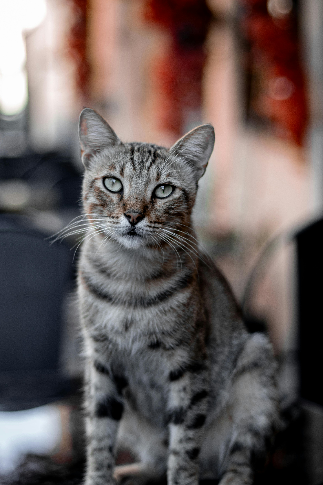

The Bengal cat is quite rare and, therefore, especially valuable. The beauty, strength, and grace of large predators are truly mesmerizing. However, of course, few people would consider keeping a tiger or a panther in an apartment for reasons of both ethics and basic safety. A small domestic "leopard," on the other hand, is a completely realistic alternative. The Bengal breed combines the best traits of its ancestors: not only an attractive appearance but also intelligence, curiosity, activity, and friendliness....